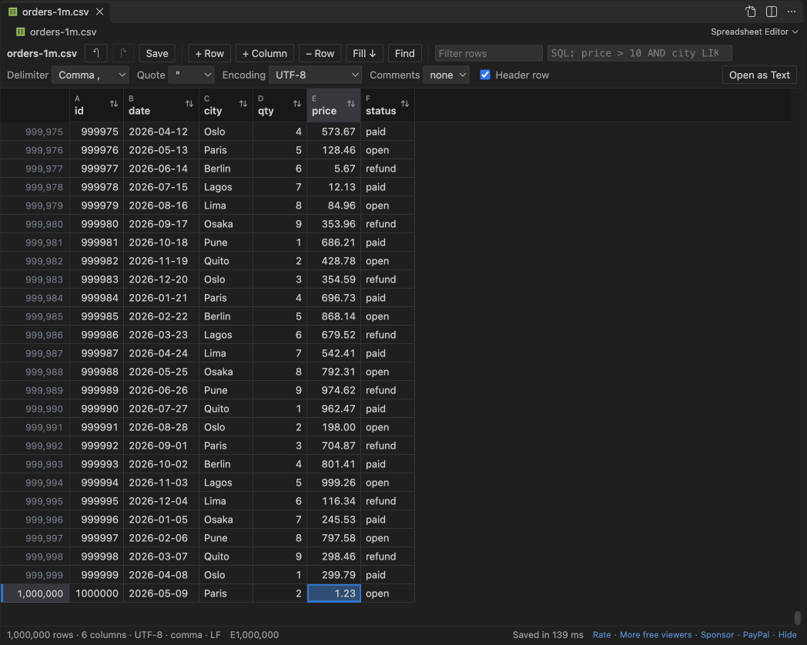

Open files in VS Code and Cursor / Tables and data
Edit a CSV file that is too big for Excel
Excel stops at 1,048,576 rows, and a text editor gets slow on a file of hundreds of MB. Spreadsheet Editor opens a CSV of millions of rows in VS Code as an editable grid, and a save writes the rows you did not touch byte for byte. In the README test, a 200 MB file with 5.6 million rows opened in under 3 seconds. CSV files up to 512 MB open for editing for free, and Zovo Pro (USD 19 once) raises that to 2,000 MB, with 3 free tries.
Free, MIT license. Extension ID zovo.zovo-spreadsheet-editor, version 0.1.1. Needs VS Code 1.90.0 or newer.
Also free from Zovo: XLSX, Excel, CSV & Parquet Viewer, VS Code Marketplace · Open VSX (Cursor, Windsurf).

Steps in VS Code
- Install Spreadsheet Editor from the Marketplace, or press Ctrl+P (Cmd+P on macOS) and run
ext install zovo.zovo-spreadsheet-editor. - Right-click the
.csvfile in the Explorer and pick "Open in Spreadsheet Editor", or click the table icon at the top right of the text editor. A CSV keeps opening as text by default. - Wait for the row count in the status bar. Files up to 512 MB open for editing, and files up to 1,024 MB open read-only with a note.
- Find the rows to change with the Filter rows box, or type a condition such as
status = 'refund' AND price > 500in the SQL box. Ctrl+F (Cmd+F on a Mac) opens find and replace. - Click a cell and type, paste a block, or press Ctrl+D to fill down. Edited cells turn green.
- Press Ctrl+S. Rows you did not change are copied byte for byte, and the save writes a temporary file first, so a failed save never leaves a half-written file.
Where Zovo Pro saves time
Editing, undo, find and replace, filters, sort, column stats and saving are free, with no limit on rows, edits or saves. In the README test, a 1,000,000-row CSV of 38 MB opened in 1.9 s and saved in 1.3 s. Sorting and filtering change the view only, so the file keeps its row order.
Database dumps and log exports often pass 512 MB. Without Pro, such a file opens read-only up to 1,024 MB and not at all above that. This Pro tool opens CSV files up to 2,000 MB and workbooks up to 200 MB for editing, with the same byte-for-byte save. The other Pro tools in Spreadsheet Editor are Find and Replace in CSV Files and Save Filtered Rows as a New File.
With Edit files past the free size limits (Zovo Pro)
- Open the large CSV in Spreadsheet Editor. The note above the grid has the button "Open for editing with Zovo Pro", with the free tries left.
- Click it. The file opens again, now for editing. A try counts only when the file opened.
- After the 3 tries, the button offers Zovo Pro.
Edit files past the free size limits works 3 times on your computer before it asks for a license, and a try counts only when you get a result. Opening a file shows no popup and no countdown.
Zovo Pro costs USD 19 once. It is not a subscription, and it turns on the Pro tools in every Zovo extension, not only Spreadsheet Editor. After a card payment (Stripe) your license key shows on the next page. In VS Code, run "Zovo Pro: Enter Zovo Pro license key" from the Command Palette and paste it. The key is checked on your computer, with no network call. With GitHub Sponsors, pick the "$19 one time" tier, then run "Zovo Pro: I already paid: unlock with GitHub Sponsors" and sign in with the same GitHub account. With PayPal, send USD 19 with "Zovo Pro" in the note and the key comes by email within a day.
A team of 5: USD 59 once, by card or by PayPal. Every rule and every Pro tool is on the Zovo Pro page.
Steps in Cursor, Windsurf or VSCodium
- Open the Extensions view with Ctrl+Shift+X (Cmd+Shift+X on macOS).
- Search for
zovo.zovo-spreadsheet-editorand click Install. Cursor, Windsurf and VSCodium install from Open VSX, where it is published aszovo/zovo-spreadsheet-editor. - If your editor has no gallery, download the .vsix from the Open VSX page and run "Extensions: Install from VSIX...".
- Then use it the same way as in VS Code.
What Spreadsheet Editor handles
- CSV, TSV,
.taband.psvfiles with any one-character delimiter. - 13 encodings, among them UTF-8, UTF-16, Windows-1252, Shift_JIS and GB18030, kept on save with the byte order mark.
- Mixed line endings, quoted fields and comment lines, kept as they were.
- A file changed on disk while you edit. Save asks before it overwrites anything.
What it does not do
- Free editing up to 512 MB, read-only up to 1,024 MB. Without Pro, a size setting above the default works as the default.
- With Pro, the editing limit is 2,000 MB.
- Copy takes up to 200,000 rows at once (setting
spreadsheetEditor.maxCopyRows). - The SQL box filters rows with a WHERE condition. It does not run GROUP BY or JOIN.
Other options
- Table Viewer. From the same publisher. Read-only, but it views, sorts and queries big CSV files with SQL.
- sed or awk. Command line tools that change a huge file line by line. Free and fast, but they do not understand quoted fields.
- EmEditor. A Windows text editor with a CSV mode for very large files. Paid.
Install counts and Open VSX status were checked on 13 November 2026. Descriptions in quotes are the extensions' own.
Questions
Will saving change rows I did not edit?
No. A test edits one cell in a 1,000,000-row file and checks that every other byte is the same.
Can I undo after I saved?
Yes. Undo and redo work before and after a save, for cells, rows, columns, moves, paste, fill down and Replace All.
How do I open every CSV in the grid?
Run "Spreadsheet Editor: Make Spreadsheet Editor the Default for CSV and TSV". Open as Text in the editor title switches one file back.
Does it work in Cursor or Windsurf?
Yes. Cursor, Windsurf and VSCodium install extensions from Open VSX. Search for the extension in their Extensions view and install it there.
More about Spreadsheet Editor
Read the Spreadsheet Editor page for every feature and setting, or the source code on GitHub.
Related guides
- XLSX, Excel, CSV & Parquet Viewer on the VS Code Marketplace (also on Open VSX). Opens xlsx, xls, csv and parquet files as a sortable table with SQL filters.
- Edit CSV files in VS Code as a spreadsheet
- Find and replace across all CSV files in a workspace
- Edit an .xlsx file without Excel
- Fix a CSV that opens in one column or with broken characters
Zovo Pro and support
Zovo Pro: USD 19 once, every Zovo viewer. It turns on the Pro tools in this extension and in the other Zovo extensions you use. The free features stay free.
After a card payment your license key shows on the next page. Paste it with the command "Zovo Pro: Enter a key".
You can also support the work with no Pro:
Need your format supported?
Open a format request with a sample file, and I reply there whether it can be done. For USD 299 once, through this GitHub Sponsors tier, I add your file format or a missing feature to this extension, with tests, within 7 days.